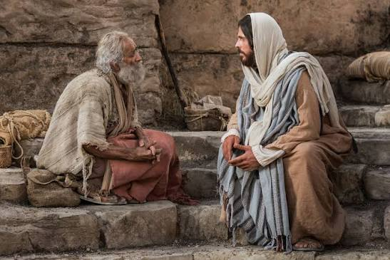

Life of Jesus
- Life: Jesus was a first-century Jewish teacher from Nazareth in Galilee. Most historians place his birth around 6-4 BCE and his death around 30–33 CE.
- Teachings: He taught love for God and others, forgiveness, mercy, humility, care for the poor, and love for enemies.
- Ministry: The New Testament describes his preaching, gathering disciples, healing people, and performing miracles.
- Death: He was crucified in Jerusalem under the Roman governor Pontius Pilate.
- Resurrection: Christians believe he rose from the dead three days later and that his death and resurrection offer salvation.
- Sources: The main accounts of his life are the four New Testament Gospels: Matthew, Mark, Luke, and John.
- Christianity regards Jesus as divine. Islam honors him as a prophet and Messiah but does not regard him as God.